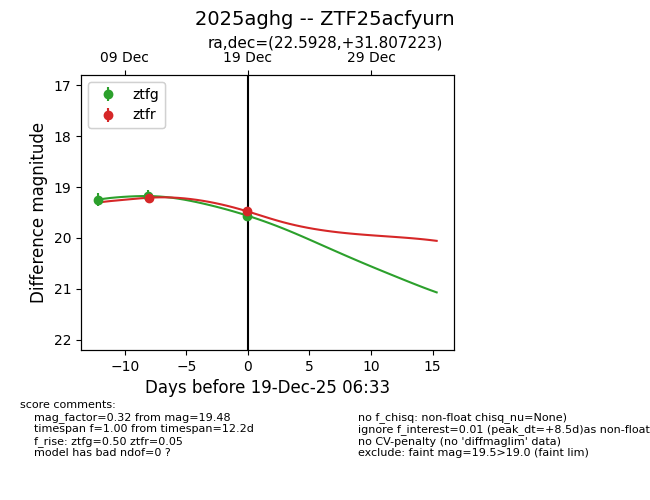
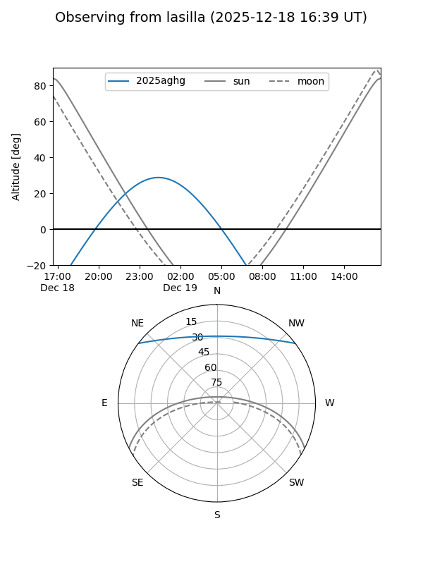
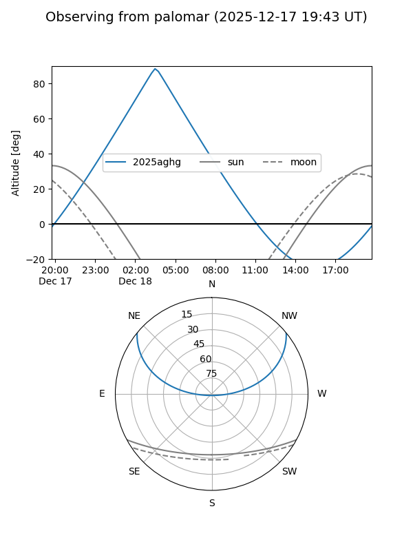
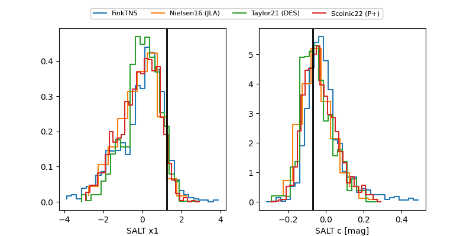

2025aghg
Target 2025aghg at 2025-12-19 06:34
Aliases and brokers:
FINK: fink-portal.org/ZTF25acfyurn
Lasair: lasair-ztf.lsst.ac.uk/objects/ZTF25acfyurn
ALeRCE: alerce.online/object/ZTF25acfyurn
TNS: wis-tns.org/object/2025aghg
YSE: ziggy.ucolick.org/yse/transient_detail/2025aghg
alt names
ZTF25acfyurn (ztf,fink_ztf)
2025aghg (tns,yse)
Coordinates:
equatorial (ra, dec) = 22.5928,+31.80722
equatorial (HMS+DMS) = 01:30:22.28,+31:48:26.00
galactic (l, b) = (132.5147,-30.33904)
Flags:
Photometry:
last ztfg=19.56, ztfr=19.48
3 ztfg, 2 ztfr detections
Lightcurve

Visibility


Additional plots
